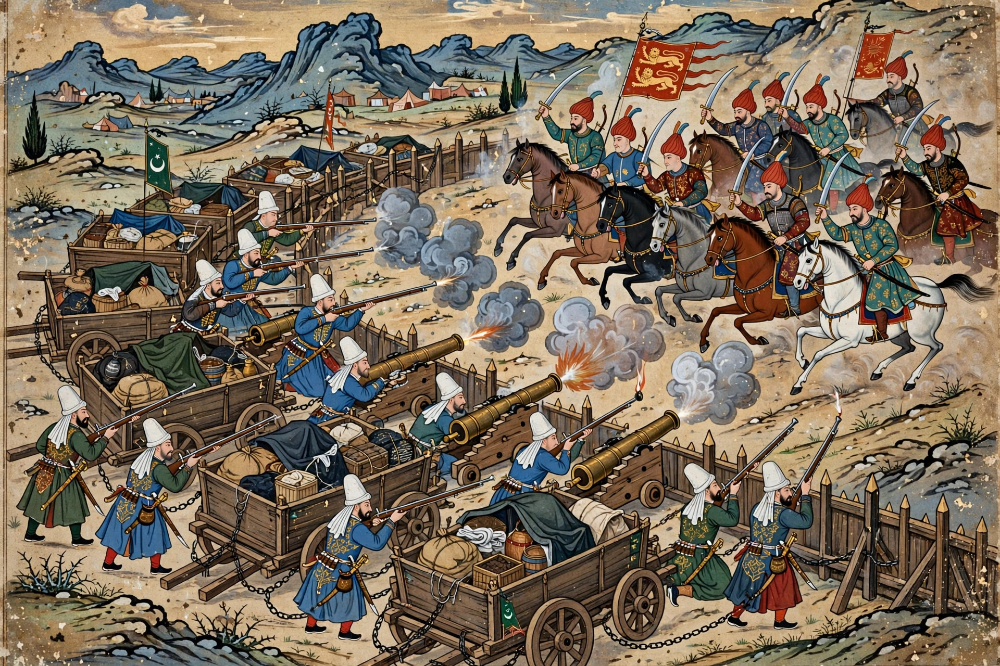

| Battle of Chaldiran | |
|---|---|
 | |
| Date | 23 August 1514 |
| Location | Chaldiran, near Khoy, northwestern Iran |
| Result | Ottoman victory; Eastern Anatolia and Upper Mesopotamia annexed by the Ottomans |
| Belligerents | Ottoman Empire · Safavid Empire |
| Commanders | Selim I · Ismail I |
| Key factor | Ottoman gunpowder weapons — Janissary muskets and field artillery |
The Battle of Chaldiran (Persian: جنگ چالدران) was fought on 23 August 1514 between the Ottoman Empire under Sultan Selim I and the Safavid Empire of Shah Ismail I, near the town of Chaldiran in present-day West Azerbaijan Province, Iran. A landmark in Ottoman–Persian rivalry, it demonstrated the decisive power of gunpowder weapons against traditional cavalry and fixed the rough frontier between the two empires in Anatolia and Mesopotamia for centuries.
Ismail I, the charismatic young founder of the Safavid order-state, had conquered Persia by 1510 and promoted Twelver Shi'ism as its official creed. His Qizilbash ("Red Head") Turkmen followers proselytised energetically among the Turkmen of Ottoman Anatolia, where a major pro-Safavid revolt (the Şahkulu rebellion, 1511) shook the empire. Selim I, having seized the Ottoman throne in 1512, moved brutally to secure his eastern frontier — ordering registers and mass arrests and killings of suspected Qizilbash sympathisers in Anatolia — and in 1514 marched east at the head of a large army. His logistical feat in supplying the force across eastern Anatolia was considerable; his Janissaries mutinied over the hardships before he finally forced battle.
Against the advice of commanders who counselled an immediate attack, Ismail allowed the Ottomans to deploy their characteristic defensive system: wagons chained together as a laager, behind which stood field artillery and ranks of Janissary musketeers. Selim's centre was held by this firepower, his flanks by sipahi cavalry. The Safavid army, relying on the superb Qizilbash cavalry that had won Ismail a decade of victories — and largely scorning firearms — charged the Ottoman wings with initial success, but assaults on the centre broke against massed musket and cannon fire. Ismail was wounded and nearly captured, escaping the field; his camp, household, and one of his wives fell into Ottoman hands. Safavid losses were severe, including many of its senior commanders.
Selim occupied Tabriz, the Safavid capital, for a week before withdrawing — supply problems and Janissary discontent forbade a longer stay — but the annexation of Eastern Anatolia and Upper Mesopotamia was permanent, removing the Safavids' Anatolian recruiting grounds. Ismail, undefeated before Chaldiran, never personally led his army in battle again and retreated into court life, dying in 1524. The Safavids themselves drew the lesson: under his successors they adopted muskets and artillery with the help of the Sherley brothers and later reformers. Chaldiran opened the long Ottoman–Safavid struggle (intermittent until 1639, when the Treaty of Zuhab drew a frontier close to the modern Iran–Iraq–Turkey borders), and the battle remains a touchstone in Turkish, Iranian, and Kurdish historical memory — the Kurdish principalities of the region submitted to Selim in its wake, organised by Idris Bitlisi.
See also: Ismail I · Selim I · Safavid dynasty · Isfahan · Battle of Ankara